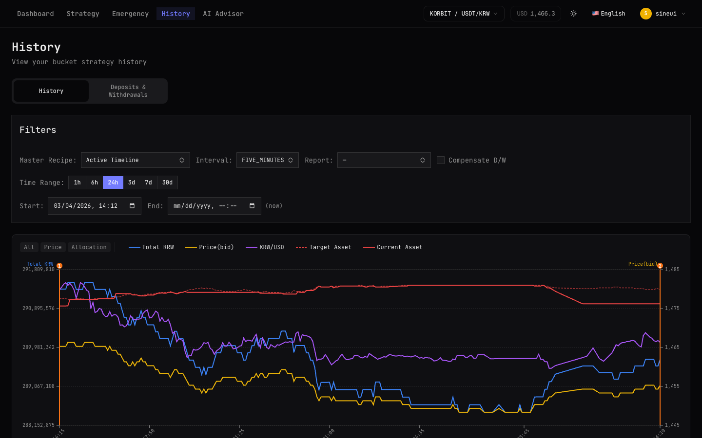

제품
traig는 빠르게 진화 중입니다 — 여기 있는 모든 것은 변경될 수 있습니다
스마트 조정으로 모든 거래의 완전한 기록.

트레이딩 활동을 이해하는 데 필요한 모든 것.
세금 신고나 분석을 위해 거래 히스토리를 CSV로 다운로드하세요.
각 거래를 생성한 레시피를 확인하세요.
납부한 거래 수수료의 상세 내역.
승률, 평균 거래 규모, 총 거래량 등.
traig 얼리 액세스를 위한 웨이트리스트에 등록하세요.